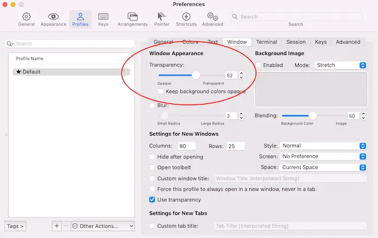
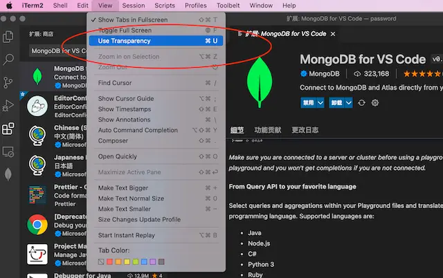
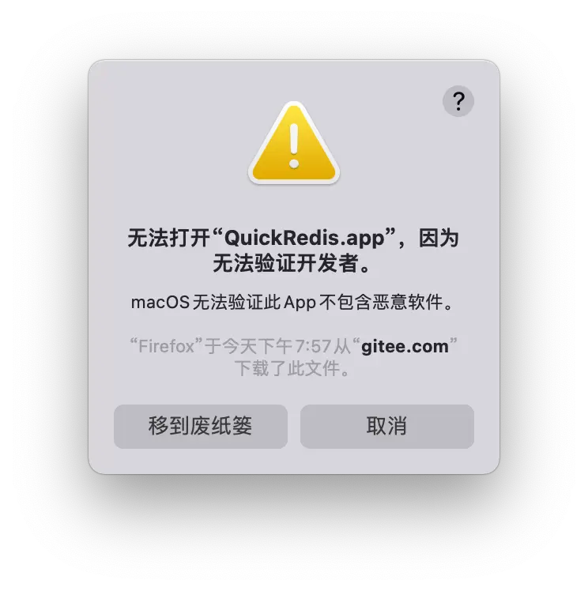

概述：macOS 26-27 与 Apple Silicon 时代
macOS 近年版本线一图看清：
macOS Tahoe（26）于 2025-09-16 推送正式版，是兼容 Intel Mac 的最后一个大版本，Liquid Glass 设计语言首个 macOS。macOS 27 Golden Gate 仅支持 Apple Silicon，Intel Mac 全部出局（官方承诺三年安全更新）。
迁移提醒：仍依赖 Intel 软件（旧 JDK、专有客户端）的环境，在 macOS 26 期间完成 ARM64 原生迁移测试，否则 27 后 Rosetta 2 逐步退役。
码农必备工具链
1. iTerm2 与快速 SSH
 官网。配 cmd+u 切窗口透明：
官网。配 cmd+u 切窗口透明：


快速 SSH：先建 expect 脚本，替换主机与密码（首次需手动 ssh 加信任主机）：
vim aliyun_iterm2_profile
#!/usr/bin/expect -f
set user root
set host ip
set password pwd
set timeout -1
spawn ssh $user@$host
expect "*password:*"
send "$password\r"
interact
expect eof
chmod a+x aliyun_iterm2_profile在 iTerm2 增加 profile：command 从 login shell 切到 command，填入上面脚本路径。
 。替代品 Warp（GPU 终端 + AI 辅助，需 GitHub 授权）。
。替代品 Warp（GPU 终端 + AI 辅助，需 GitHub 授权）。
2. Homebrew
macOS 默认包管理器。Apple Silicon 前缀 /opt/homebrew，Intel 是 /usr/local。Formula 装命令行工具到 Cellar，Cask 装 GUI 应用到 /Applications。
3. Oh My Zsh
GitHub 访问不了可配代理或用 gitee 镜像：
sh -c "$(curl -fsSL https://raw.github.com/ohmyzsh/ohmyzsh/master/tools/install.sh)"~/.zshrc 推荐配置（插件 + 现代别名）：
plugins=(git docker extract colored-man-pages
command-not-found zsh-syntax-highlighting zsh-autosuggestions)
HIST_STAMPS="yyyy-mm-dd"
ZSH_THEME="robbyrussell"
alias cd="z" # zoxide 代替 cd
alias ping="gping"
alias du="dust"
alias df="duf"
alias ls="eza -l --header --git" # exa 已停维护，新一代 eza
alias cat="bat"
eval "$(mcfly init zsh)"
eval "$(zoxide init zsh)"difftastic 语法 diff 替代 diff：
git config --global diff.external difft禁用自动更新：~/.zshrc 找到 DISABLE_AUTO_UPDATE 去掉行首注释。
4. VS Code
装扩展前先搜 @builtin 看是否已内置，每月更新都在收编能力。
 。
。
推荐插件：
- AI 补全：tabnine / CodeGeeX
- 语言：Go for VS Code、proto3/JumpProtobuf
- 效率：GitLens、Error Lens、Better Comments、indent-rainbow
- 文档：Markdown Preview Mermaid Support
命令行调用：Cmd+Shift+P → Shell Command → Install 'code' command in PATH，之后 code .。
其他工具
| 工具 | 用途 | 备注 |
|---|---|---|
| fig | 终端自动补全 | 需填邮箱同步才生效，~/.local/bin |
| webp converter | 批量转 webp | App Store 免费 |
| Atom | 文本编辑器 | 已停维护 |
| sublime | 闭源可免费用 | 装 terminus 终端插件 |
| ungoogled-chromium | 无 Google 全家桶 Chrome | brew install --cask eloston-chromium |
| Raycast/Alfred | 启动器替代 Spotlight | Raycast 免费现代 |
| Ghostty/Zed | Rust 终端/编辑器 | GPU 加速，AI 代理场景流行 |
系统操作技巧
无法验证开发者：Finder 找到应用右键→打开（

 ）。开机启动走 Launchd（~/Library/LaunchAgents、/Library/LaunchDaemons），而非老的 StartupItems。
）。开机启动走 Launchd（~/Library/LaunchAgents、/Library/LaunchDaemons），而非老的 StartupItems。
常用命令速查：
| 命令 | 作用 | 示例 |
|---|---|---|
open . | 访达打开当前目录 | open /Users/junjunyi |
lsof -i tcp:8080 | 查看端口占用 | lsof -i :3000 |
ifconfig en0 | 看本机 IP（Wi-Fi=en0） | ifconfig | grep inet |
sudo vim /etc/hosts | 改 hosts | — |
tree | 树状目录 | brew install tree |
xxd -l 40 f | 十六进制看文件头 | xxd -l 100 binary.bin |
ssh-copy-id | SSH 公钥免密 | ssh-copy-id root@192.168.1.1 |
arch | 看 CPU 架构 | arm64 / x86_64 |
SSH 免密：
ssh-copy-id -i /root/.ssh/id_rsa.pub root@192.168.0.104删除烦人的 Microsoft AutoUpdate：
cd /Library/Application Support/Microsoft/MAU2.0
sudo rm -rf Microsoft\ AutoUpdate.app访达按键：回车重命名、空格预览、cmd+o/↓ 打开、cmd+↑ 进上级。截图 shift+cmd+5，朗读 option+esc。
macOS 系统架构
macOS 基于 Darwin 开源内核（XNU，X is Not Unix），混合内核：Mach 负责硬件抽象与 IPC，BSD 负责 POSIX 兼容。分层架构：
核心概念：开发者日常打交道的是 BSD 系统调用（经 libc），Mach 层在底层默默调度。这就是某些 Unix 工具在 macOS 上行为与 Linux 不同的原因。
APFS 文件系统 Copy-on-Write：写时不覆盖原数据，支持高效快照与克隆；系统卷只读（SSV 签名防篡改）+ 数据卷可读写，靠 firmlinks 合并。启动链：iBoot → 内核 → launchd（PID 1）→ WindowServer/loginwindow。
Homebrew 与包管理器对比
brew install 的决策流程：
四大包管理器对照：
| 维度 | Homebrew | MacPorts | nix-darwin | Conda |
|---|---|---|---|---|
| 安装路径 | /opt/homebrew (ARM) | /opt/local | /nix | ~/miniconda3 |
| GUI 应用 | 支持（Cask） | 不支持 | 不支持 | 不支持 |
| 多版本共存 | 支持 | 支持 | 完美 | 完美（env） |
| 可复现性 | 一般 | 较好 | 优秀 | 较好 |
| 适用场景 | 通用开发最流行 | 完整依赖隔离 | 声明式可复现 | Python 数据科学 |
macOS vs Linux 关键差异：
| 维度 | macOS | Linux |
|---|---|---|
| 内核 | XNU（Mach+BSD 混合） | Linux 宏内核 |
| 默认 Shell | zsh | bash |
| 文件系统 | APFS（CoW 快照） | ext4/btrfs |
| SIP | /System 只读 | 无 |
| 硬件 | Apple Silicon ARM64 统一内存 | x86_64/ARM64 多样 |
常见陷阱
- Rosetta 2 性能损失：x86 程序翻译损失 10-30%，优先装 ARM64 原生版；
arch看架构，Docker 跑 amd64 容器要显式--platform。 - SIP 限制：别为方便禁 SIP；系统目录改不动就用 Homebrew 装到 /opt/homebrew。
- 内存压力与 Swap：盯活动监视器内存压力图，关掉大 Electron 应用；Apple Silicon 内存不可后期升级，买够。
- 磁盘「其他」占用：清 Xcode DerivedData、
brew cleanup、docker system prune，别动 /System。 - 环境依赖冲突：Python 用 pyenv+venv，Node 用 nvm/fnm，别污染系统包。
- 窗口管理弱：装 Rectangle 实现快捷键分屏，Karabiner-Elements 改 Caps Lock 为 Escape。
- 安全配置：开 FileVault 全盘加密，Gatekeeper 别全局禁，SSH 用 ed25519 存钥匙串。
- Time Machine 备份：外置 SSD/NAS 做目标，排除 node_modules/Docker 镜像，定期验证可恢复，遵循 3-2-1 异地备份。
FAQ
Q1：Intel 软件 27 还能用吗？
macOS 27 最后完整支持 Rosetta 2，28 起只留精简子集，尽快迁 ARM64 原生。
Q2：Homebrew 装哪了？
Apple Silicon 是 /opt/homebrew，Intel 是 /usr/local，把对应 bin 加 PATH。
Q3：pip install 报 externally-managed？
系统 Python 不让直接装，用 venv 或 conda，别 sudo pip。
总结
macOS 26 是 Intel 收官版，27 全面 Apple Silicon。我的开发姿势：
- 终端栈：iTerm2 + zsh + Oh My Zsh
- 包管理：Homebrew（Formula + Cask + Bottle）
- 项目隔离：pyenv/nvm 管理多版本
- 系统理解：XNU 混合内核 + APFS CoW 是理解 macOS 与 Linux 差异的关键
我的 macOS 开发环境配置清单
用了五年 Mac，换过三回机器，每次新机器到手我都按一套流程配。说几个我认为最值的：
| 类别 | 必装 | 为什么 |
|---|---|---|
| 终端 | iTerm2 + zsh + Oh My Zsh | 自带终端太难用，iTerm2 分屏配色都强 |
| 包管理 | Homebrew | 不装它等于没开 Mac 开发模式 |
| 窗口管理 | Rectangle | 快捷键分屏，比自带的香 |
| 输入法 | Rime | 自定义短语和快捷键，效率神器 |
| 截图 | CleanShot X | 截图录屏标注，比自带强太多 |
| 启动器 | Raycast | 比 Alfred 免费，效率高 |
把 Caps Lock 改成 Escape，用 Karabiner-Elements。写代码的人都懂，Escape 用得比 Caps Lock 多一百倍。改完之后我再也没按错过。
Homebrew 我踩过的坑
Homebrew 是好东西，但坑也不少。说两个我常踩的：
第一个坑：Apple Silicon 上 Homebrew 装在 /opt/homebrew，老 Intel 是 /usr/local。如果你从 Intel 机器迁过来，PATH 配错了，装的命令行工具根本找不到。我每次新机器第一件事就是确认 which brew 指向对不对。
第二个坑：别用 brew cask install 装 GUI 应用之后又手动拖到应用程序文件夹。Cask 会自己管理，你手动拖了之后 brew 就管不着它了，升级的时候会冲突。
| 坑 | 症状 | 解决 |
|---|---|---|
| PATH 配错 | brew 装了但命令找不到 | 确认 /opt/homebrew/bin 在 PATH 里 |
| cask 手动移动 | brew upgrade 报错 | 用 brew reinstall 重新管 |
| 权限问题 | brew install 报权限错 | 别 sudo brew，修目录权限 |
| 缓存太大 | 磁盘满了 | brew cleanup --prune=all |
xcode-select --install] B --> C[装 Homebrew] C --> D[确认 brew 路径
which brew] D --> E[装终端栈
iTerm2 + zsh + Oh My Zsh] E --> F[装窗口管理
Rectangle] F --> G[装开发工具
git + gh + ffmpeg] G --> H[配 SSH 密钥
存钥匙串] H --> I[开始干活]
常见问题 FAQ
Q1：Mac 上做开发要装杀毒软件吗？
不用。macOS 自带的 Gatekeeper 和 XProtect 够了。装第三方杀毒软件反而拖慢系统，还可能跟开发工具冲突。只要你不随便下不明来源的 .dmg，不开任何来源安装，就很安全。
Q2：Docker Desktop 占空间太大怎么办？
Docker 镜像和数据存在虚拟机磁盘里，时间久了会涨很大。docker system prune -a 清掉不用的镜像和容器。我一般每个月清一次，能省下十几个 G。真不够用就换 Colima，比 Docker Desktop 轻量。
Q3：Mac 合盖后怎么跑后台任务？
用 caffeinate。caffeinate -i command 能防止系统休眠。或者 pmset noidle 临时禁止休眠。跑长任务的时候开着，跑完关掉。别用第三方防休眠 App，自带命令就够了。
Q4：怎么把旧 Mac 的开发环境迁到新 Mac？
别用迁移助理全量搬，会把一堆垃圾也搬过来。我自己的做法是：新机器干净装，然后照着我的配置清单重新装一遍。这样能顺便把过时的工具清理掉。dotfiles 用 git 管理，git clone 下来就完事。
Q5：Apple Silicon 跑 x86 软件有什么要注意的？
2026 年了，大部分开发工具都有 ARM64 原生版本了。偶尔还有 x86 的老工具，Rosetta 2 能转，但性能差点。关键是别把 ARM64 和 x86 的 Homebrew 混着用，那就乱套了。确认 arch -arm64 跑你的终端。